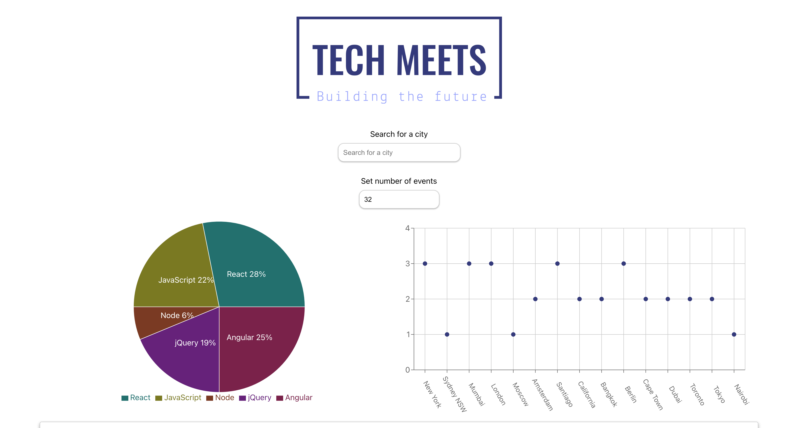

Work
Tech Meet Web App
Description
This is an AWS serverless web application that allows users to search for tech events globally. The users are able to set the number of events they see and filter the specific city they want to see. This application is a Progressive Web Application and users are able to use the app offline. This application also includes data visualization to see how events are layed out depending on their location and the number of events.
Objective
Build an application based off of Test Driven Development that utilizes serverless functions and allows users to filter events by city, show and hide the details of an event, specify the number of events shown, use the app offline and display charts visualizing the event details.
Technologies Used
This project was built with React.js on the frontend. The backend that was used was AWS lambda serverless. This project was Tested with Jest in React using TDD best practices.
See project on GitHubLive Site
Stay Chatty Mobile App


Description
Stay Chatty is a mobile application that allows users to chat back in forth and take and share pictures and their locations. Users are also able to pick their own backgrounds for the chat screen and set their usernames, which are anonymous using firebases anonymous authentication.
Objective
-Users are able to take pictures and share pictures from their library of their mobile device. -Users are able to share their location with the rest of the users in the chat room. -data sent from users such as messages and images are stored in the database and cached so users are able to still view images or messages offline.
Technologies Used
Tech used: React Native, Expo, Gifted Chat, Firebase
See project on GitHubPokedex Web Application

Description
This Pokedex device application aspired from the Pokemon TV series. This app has a collection of Pokemon that are being called at a press of a button from an API database of Pokemon. Once the Pokemon are called, the Pokemon image, Name, Height, types and abilities are displayed as a popup modal.
Objective
-Users are able to click any pokemon and see the name and stats for that pokemon including height, weight, and abilities. The main purpose of building this application was to become familiar with web API's and learn how to draw data from an external source and have it display within an application.
Technologies Used
Tech used: HTML, CSS, Javascript
See project on GitHubLive Site
NostalgicFlix React Application

Description
Used the REST API i built in on backend and connected it for this application and pulled the data to be dynamically displayed through the application. Users are able to login, signup, update their password and username and view a collection of classic movies and save them to their favorites. Users are also able to reset their password if they forgot by providing their email. The application has trailers that are dynamically imported to each specific movie from the backend of mongoDB. It also has a watch now link that takes users to the specific movie they want to watch on youtube. This application is fully responsive and works on all devices.
Objective
-Created a application that allows users to create an account and save classic movies to watch later on youtube. Also learned the process of building an entire backend as well as the frontend and connecting them.
Technologies Used
Tech used: React, Javascript, SCSS, HTML, Bootstrap
See project on GitHubLive Site
NostalgicFlix Angular Application

Description
This is an Angular Application that uses my movie API to display a list of movies for users to see information and add to their favorites. This was also designed with React as the frontend framework.
Objective
-Created a application using Angular and the coding language Typescript that allows users to create an account and save classic movies to watch later on youtube. Also learned the process of building an entire backend as well as the frontend and connecting them.
Technologies Used
Tech used: Angular, Typescript, SCSS, HTML, Angular Material
See project on GitHubLive Site
NostalgicFlix API

Description
This web application implements a RESTful API to perform CRUD operations on many different movies on the application. Users will be able to sign up, update their personal information, and add and remove movies from their favorites. Users will also be able to reset their passwords if forgotten.
Objective
-Created an API that uses CRUD operations. Developed the application with node.js and setup url endpoints with express. Users are able to signup, login and use forget password functionality to recover their password. Users are also able to add and remove favorite movies. The database connected to this API is mongoose.
Technologies Used
Tech used: Node.js, Express, Mongoose, MongoDB
See project on GitHubLive Site